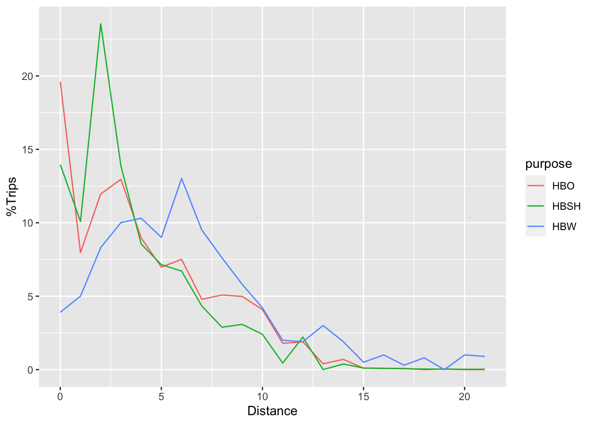

Chapter 4 Mode and Destination Choice
Homework
Let’s first start with a couple of practice problems before using data to estimate multinomial logit models.
- Calculate the Non-motorized Travel Time, Auto Utility, Non-motorized Utility, Auto Probability, Non-motorized Probability, and the Mode Choice Logsum using the following information:
\(\beta\)1 = -0.025, \(\beta\)2 = -0.06257, \(\alpha\)1 = 1, \(\alpha\)2 = -1.2258
\[Highway Time = \begin{vmatrix}0.77 & 1.55 & 21.60\\ 1.55 & 0.77 & 20.51\\22.02 & 20.93 & 1.21 \end{vmatrix}\]
\[ Highway Distance = \begin{vmatrix}0 & 0.72 & 12.87\\ 0.72 & 0 & 12.49\\12.82 & 12.44 & 0 \end{vmatrix}\]
- Calculate the Utility, Probability, Trips, and Destination Choice Logsum. Check your answer to make sure the rowsum of the Trips is equal to the productions for each row. The Mode Choice Logsum found in Question 1 should be used as the impedance. Use the following information:
\(\beta\)2 = 1.1657, \(\alpha\)2 = Attractions
| n | Productions |
|---|---|
| 1 | 0.6 |
| 2 | 1.8 |
| 3 | 1.3 |
| n | Attractions |
|---|---|
| 1 | 125 |
| 2 | 180 |
| 3 | 210 |
Now, for this week’s assignment, you will use data from the 2000 Bay Area Travel
Survey to estimate multinomial logit models that predict mode choice for work
trips. The data is available on on Box. The data
are listed as worktrips_logitdata.rds. We will also need to load the
mlogit library package, which contains the tools necessary to estimate
multinomial logit models.
## Warning: package 'mlogit' was built under R version 4.0.2## Loading required package: dfidx##
## Attaching package: 'dfidx'## The following object is masked from 'package:stats':
##
## filterBecause multinomial logit models are so different from other models, the data are stored in a special type of data frame. You can see the first several rows of this data below; Person 1 in household 2 has five alternatives, and they chose to drive alone. Person 3 chose to take transit.
## HHID PERID CASE ALTNUM NUMALTS CHOSEN IVTT OVTT
## 2-1. Drive Alone 2 1 1 Drive Alone 5 TRUE 13.38 2.0
## 2-1. Share 2 2 1 1 Share 2 5 FALSE 18.38 2.0
## 2-1. Share 3+ 2 1 1 Share 3+ 5 FALSE 20.38 2.0
## 2-1. Transit 2 1 1 Transit 5 FALSE 25.90 15.2
## 2-1. Bike 2 1 1 Bike 5 FALSE 40.50 2.0
## 3-1. Drive Alone 3 1 2 Drive Alone 5 FALSE 29.92 10.0
## 3-1. Share 2 3 1 2 Share 2 5 FALSE 34.92 10.0
## 3-1. Share 3+ 3 1 2 Share 3+ 5 FALSE 21.92 10.0
## 3-1. Transit 3 1 2 Transit 5 TRUE 22.96 14.2
## 3-1. Bike 3 1 2 Bike 5 FALSE 58.95 10.0
## 5-1. Drive Alone 5 1 3 Drive Alone 4 TRUE 8.60 6.0
## 5-1. Share 2 5 1 3 Share 2 4 FALSE 13.60 6.0Now that your data is cleaned and formatted, you can estimate multinomial logit
models. To do this, use the mlogit() function, in a manner sort of like you
would use the lm() command. One thing to look out for: the difference between
generic and alternative-specific variables.5
- Generic Variables: These are coefficients with a single estimated parameter. That is, the \(\hat{\beta}\) coefficient for these variables has the same value in the utility equation for every alternative. These estimates come from variables that vary naturally across the alternatives, like the cost of travel.
- Alternative-Specific Variables: This type of coefficient has a unique estimate for each alternative. That is, \(\hat{\beta}_{DA}\) is different from \(\hat{\beta}_{Walk}\). This type of estimate comes from variables that are constant across alternatives, like the distance of the trip.
To specify the model, we use the following construction.
To examine the model output, the standard summary() command will produce a
coefficients table and key test statistics. The the texreg package will
produce convenient model comparison tables that can be included in a report or
pasted into Excel for further formatting. For your homework, please include a
model comparison table rather than a print out of each model summary.
Question 1: Calculate the likelihood of a model with no covariates
(equal-shares) and a model with constants only (market shares). Estimate a model
with only the travel time, and calculate the McFadden pseudo-\(R^2\) statistic
with respect to the equal shares model and the market shares model. Which
statistic is reported by the summary() command? Why is this important?
Question 2: Estimate a model with just the total travel time
(TVTT) and the cost of the trip (COST). These two parameter estimates will
allow you to calculate the value of time for the sample population as
\[VOT = \frac{60\hat{\beta}_{TVTT}}{100 \hat{\beta}_{COST}}\]
Report the value of time you calculate. Is this reasonable?
Question 3: Estimate a model with the out-of-vehicle travel
time (OVTT), and the in-vehicle travel time (IVTT). What is the
ratio of these parameters? What does this tell you about how people feel waiting
for the bus?
Question 4: Estimate a model with the residential population density
(RSPOPDEN) and the workplace employment density (WKEMPDEN), controlling for
the affordability of the trip (COSTINC). Does land use at the origin or the
destination of the trip affect the mode choice problem more? Is it different
by mode?
Question 5: Estimate a nested logit model including cost, travel time,
out-of-vehicle travel time, and workplace employment density. Group car
alternatives into one nest, and non-car alternatives into another. Constrain the
nesting parameter to a single value (un.nest.el = TRUE). What is the estimated
value of the nesting parameter? What are the implications of this parameter
value for across-nest substitution?
Question 6: Estimate another nested logit model with the same nests, but this
time segment the data on income; include households making less than $50k/year
in one segment and households making at least $50k in the other. Add vehicles
per worker as a covariate (VEHBYWRK). Comment on how the two segments respond
to the different covariates. Which matters more to which group?
Question 7. Of the models you estimated, which is the preferred in terms of model likelihood? What about in terms of behavioral sensitivity?
Hint: A tool to compare models is thescreenreg() function in library(texreg).
4.1 Lab
In practice, small-sample surveys have a difficult time generating estimates of choice parameters that are both precise and rational. As a result, it is common to assert choice coefficients that have worked well in comparable cities and then calibrate the mode-specific constants and distance decay parameters to match your targets. In this lab you will calibrate the mode choice models and the destination choice models for the following trip purposes:
- Home-based Work
- Home-based Other
- Home-based Shopping
In the Roanoke mode choice model, HBO and HBShopping get combined for mode choice. So you will calibrate three purposes in the destination choice model, but only two in the mode choice model.
Even though trip distribution comes first in the standard four-step process, we end up using the mode choice logsums mode choice to inform destination choice. Mathematically they happen simultaneously, but in the model it goes
skims > mode choice logsums > destination choice > mode choiceAs a result you will need to calibrate the models iteratively: first adjust the mode choice constants, then the distance decay parameter, then mode choice, etc., until you are satisfied that the model meets the targets.
4.1.1 Mode Choice Calibration
The coefficients are found in the ./Params/mc/MC_Coefficients.csv file. Record
the coefficients in a table in your lab report accompanying a description of the
purpose of each coefficient and any notable values. These coefficients are
fixed; they should not change as part of this exercise.
## Parsed with column specification:
## cols(
## `;N` = col_double(),
## Name = col_character(),
## HBW = col_double(),
## HBO = col_double(),
## NHB = col_double(),
## HBSC = col_double()
## )| ;N | Name | HBW | HBO | NHB | HBSC |
|---|---|---|---|---|---|
| 1 | CIVTT | -0.025 | -0.015 | -0.02 | -0.015 |
| 2 | CSWAIT | -0.05625 | -0.03375 | -0.045 | -0.03375 |
| 3 | CLWAIT | -0.025 | -0.015 | -0.02 | -0.015 |
| 4 | CXWAIT | -0.0625 | -0.0375 | -0.05 | -0.0375 |
| 5 | CCOST | -0.00158 | -0.00237 | -0.00253 | -0.18 |
| 6 | CDRIVE | -0.05625 | -0.03375 | -0.045 | -0.03375 |
| 7 | CTERML | -0.0625 | -0.0375 | -0.05 | -0.0625 |
| 8 | CWALK | -0.0625 | -0.0375 | -0.05 | -0.0375 |
| 9 | CWALK1 | -0.0625 | -0.0375 | -0.05 | -0.0375 |
| 10 | CWALK2 | -0.09375 | -0.05625 | -0.075 | -0.05625 |
| 11 | CBIKE1 | -0.0625 | -0.0375 | -0.05 | -0.0375 |
| 12 | CBIKE2 | -0.09375 | -0.05625 | -0.075 | -0.05625 |
| 13 | DWalkBIKE | 1 | 1 | 1 | 1 |
| 14 | NC1 | 0.5 | 0.5 | 0.5 | 0.5 |
| 15 | NC2 | 0.5 | 0.5 | 0.5 | 0.5 |
| 16 | NC3 | 0.5 | 0.5 | 0.5 | 0.5 |
| 17 | CBD | 0 | 0 | 0 | 0 |
| 18 | NXFER | 0 | 0 | 0 | 0 |
| 19 | AUTOCOST | 13.6 | 13.6 | 13.6 | 13.6 |
| 20 | SHAREFAC | 2 | 2 | 2 | 2 |
The mode-specific constants are in a separate file, ./Params/mc/MC_Constants.csv.
The reference alternative in the choice model is Drive Alone, and the alternatives
with their nesting structure are:
Trips
|-- Auto
| |--Drive
| |--Share
|
|-- Transit
| |--Local
| |--Premium
|
|-- Non-motorized## Parsed with column specification:
## cols(
## `;N` = col_double(),
## Name = col_character(),
## HBW = col_double(),
## HBO = col_double(),
## NHB = col_double(),
## HBSC = col_double()
## )| ;N | Name | HBW | HBO | NHB | HBSC |
|---|---|---|---|---|---|
| 1 | K_SR | -1.17 | 0.0164 | -0.0336 | -1.169 |
| 2 | K_TRN | -0.3903 | -1.981 | -2.271 | 0.3261 |
| 3 | K_NMOT | -1.226 | -0.3834 | -0.8655 | -1.25 |
| 4 | K_PREM | 0 | 0 | 0 | 0 |
| 5 | NA | 0 | 0 | 0 | 0 |
| 6 | NA | 0 | 0 | 0 | 0 |
| 7 | NA | 0 | 0 | 0 | 0 |
| 8 | NA | 0 | 0 | 0 | 0 |
| 9 | NA | 0 | 0 | 0 | 0 |
| 10 | NA | 0 | 0 | 0 | 0 |
There is currently no premium service in the model, so changing its constant will not result in more people taking it. But the structure for it exists, if the MPO wants to look at some future transit options.
For initial values for the alternative-specific constants, you can use parameters you estimated in the homework. After you run the destination choice model and adjust its calibration (see below), run the mode choice model and look at the mode choice report. Calculate new alternative specific constants using the bias adjustment formula,
\[\alpha_{n+1} = \alpha_n + \log(A_j / S_j) \]
Where \(A_j\) is the population share (target) and \(S_j\) is the model share. The population shares (targets) are given below.
| Mode | HBW | HBO |
|---|---|---|
| Drive Alone | 87.5 | 44.1 |
| Share | 8.4 | 45.5 |
| Local Bus | 2.7 | 0.5 |
| Premium | 0.0 | 0.0 |
| Non-motorized | 1.4 | 9.9 |
4.1.2 Destination Choice Calibration
A destination choice model has three basic components:
- A size term: these are the trip attraction rates
- An impedance term: this is the mode choice logsum
- Calibration constants
Return to your trip generation lab where you estimated and adjusted attraction rates for different land uses. These attraction rates are the size terms of the destination choice model; replace the dummy rates in the model with your estimated rates.
The coefficient on the logsum term should match the nesting parameter in the mode choice model. This link is what allows for a simultaneous mode and destination choice.
Instead of alternative-specific constants, a destination choice model includes calibration constants based on distance-decay functions. By adjusting these parameters, we can make the modeled trip length frequency distribution match the observed distribution. The roanoke model has three basic versions that can be combined (but really don’t need to be)
- A distance polynomial (\(\beta_d d + \beta_{d2} d^2 + \beta_{d3} d^3\))
- A logarithmic decay function (\(\beta_d \log(d)\))
- A set of bins for trips within specific mile ranges, 0-1, 1-2, etc.
There is also an intrazonal constant, which we can leave alone for this lab. Remember that most of the work should be done by the logsum and the size term, and that the constants shouldn’t generally violate basic travel behavior theory. These constants are really just here to nudge the distribution in one direction or another.
The table and figure below show the observed trip length frequency distributions for the purposes you need to calibrate. An Excel file with the values is on LearningSuite.
| HIGH | MID | LOW | HBW | HBO | HBSH |
|---|---|---|---|---|---|
| 1 | 0.5 | 0 | 3.9039039 | 19.6131359 | 13.9606519 |
| 2 | 1.5 | 1 | 5.0050050 | 7.9734108 | 10.0849391 |
| 3 | 2.5 | 2 | 8.3083083 | 11.9601161 | 23.5531056 |
| 4 | 3.5 | 3 | 10.0100100 | 12.9567925 | 13.8690052 |
| 5 | 4.5 | 4 | 10.3103103 | 8.9700871 | 8.5542211 |
| 6 | 5.5 | 5 | 9.0090090 | 6.9767344 | 7.1484507 |
| 7 | 6.5 | 6 | 13.0130130 | 7.5098897 | 6.7094465 |
| 8 | 7.5 | 7 | 9.5095095 | 4.7840465 | 4.3326161 |
| 9 | 8.5 | 8 | 7.6076076 | 5.0830494 | 2.8884107 |
| 10 | 9.5 | 9 | 5.8058058 | 4.9833817 | 3.0809714 |
| 11 | 10.5 | 10 | 4.2042042 | 4.0863730 | 2.4070089 |
| 12 | 11.5 | 11 | 2.0020020 | 1.7940174 | 0.4464608 |
| 13 | 12.5 | 12 | 1.9019019 | 1.8936851 | 2.2144482 |
| 14 | 13.5 | 13 | 3.0030030 | 0.3986705 | 0.0000000 |
| 15 | 14.5 | 14 | 1.9019019 | 0.6976734 | 0.3851214 |
| 16 | 15.5 | 15 | 0.5005005 | 0.0996676 | 0.1093873 |
| 17 | 16.5 | 16 | 1.0010010 | 0.0897009 | 0.0772576 |
| 18 | 17.5 | 17 | 0.3003003 | 0.0797341 | 0.0590860 |
| 19 | 18.5 | 18 | 0.8008008 | 0.0000000 | 0.0402657 |
| 20 | 19.5 | 19 | 0.0000000 | 0.0498338 | 0.0304333 |
| 21 | 20.5 | 20 | 1.0010010 | 0.0000000 | 0.0210982 |
| 22 | 21.5 | 21 | 0.9009009 | 0.0000000 | 0.0276142 |
ggplot(tlfd %>% gather(purpose, share, HBW:HBSH),
aes(x = LOW, y = share, color = purpose)) +
geom_line() +
xlab("Distance") + ylab("%Trips")
The modeled TLFD for each purpose can be had on the model home screen as an output of the trip distribution model. Calculate the error between your observed and modeled TLFD. Determine which calibration curve you will use (you may decide to use different curves for different purposes). Find the coefficients of the curve that will compensate for the error in the model.
Re-run the destination choice model with your new coefficients, run the mode choice model, and adjust the coefficients over there.
4.1.3 Report
Your lab report should describe the trip distribution and mode choice models; include discussions of the coefficients and your process to calibrate the mode and distance constants. Provide results of the calibration including observed and modeled trip length frequency distributions.
This can be confusing for many students; just remember that the difference between generic and alternative-specific is in the coefficients, not the variables.↩︎